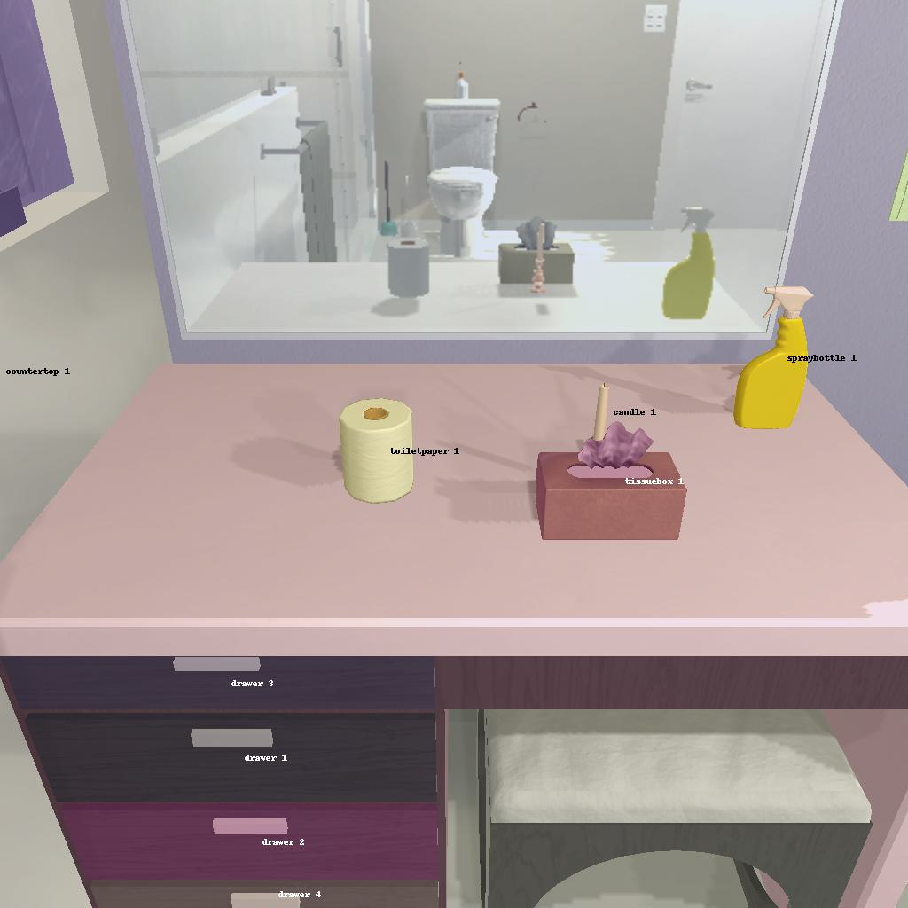

---------------------------------------------------------task: 28---------------------------------------------------------
--------------------------------------------------------------------------------------------------------------------------------------------------------------------
--------------------------------------------------------------------------------------------------------------------------------------------------------------------
Step:--------------------------------------------------------------------------3-------------------------------------------------------------------------------
----------------------------------------
VLM Prompt:
Image1:
**Instruction**
1. Analyze the provided image to identify all visible household objects, focusing on those relevant to the task description "find two spraybottle and put them in toilet."
2. Use the analysis of the image and the task hint "The agent must find an object of the desired type, pick it up, find the correct location to place it, put it down there, then look for another object of the desired type, pick it up, return to previous location, and put it down there with the other object." to answer the question: what is the most reasonable action in the choices for the task description "find two spraybottle and put them in toilet"?
4. Decide and write the answer using the template: The answer is: (i): , where i is the real number. If there is no desired object in the image, search every place based on **Initial Observation** to find the object. And if no one is exactly correct, choose a similar answer.
**Initial Observation**
You are in the middle of a room. Looking quickly around you, you can see bathtub (1), bathtubbasin (1), cart (1), sink (1), garbagecan (1), sinkbasin (1), countertop (1), drawer (1-4), toilet (1), toiletpaperhanger (1)
**Answer Choices**
(1): go to bathtub 1
(2): go to bathtubbasin 1
(3): go to cart 1
(4): go to sink 1
(5): go to garbagecan 1
(6): go to sinkbasin 1
(7): go to countertop 1
(8): go to drawer 2
(9): go to drawer 3
(10): go to drawer 4
(11): go to toilet 1
(12): go to toiletpaperhanger 1
(13): open drawer 1
(14): close drawer 1
(15): examine drawer 1
**Answer**
Let's think step by step by following the instructions.
----------------------------------------
----------------------------------------
Original Response:
First, we need to identify all visible household objects related to the task. In the image provided, we can see one spray bottle on the countertop. According to the task description, we need to find two spray bottles and put them in the toilet. Since we can see one spray bottle already, our next step is to find another one.
Based on the initial observation, we can search in places where a spray bottle might be kept. The most reasonable places to look for another spray bottle would be in drawers or on the cart, as these are typical storage areas for cleaning supplies in a bathroom.
Therefore, the most reasonable action to take first would be to search the drawers. Since we don't know which drawer might contain the spray bottle, we should start with the first one.
The answer is: (13): open drawer 1. If a spray bottle is found, we can then proceed to (11): go to toilet 1 to complete the task. If no spray bottle is found in drawer 1, we would continue searching the other drawers or the cart.
----------------------------------------
----------------------------------------
>>> Refine Original VLM Response and Get Pure Action: open drawer 1
----------------------------------------
-----------------------------------------------------------------
Running time: 8.785278558731079 seconds
Total Money: 10.061200000000008
-----------------------------------------------------------------
-----------------------------------------------------------------
Text Observation:You open the drawer 1. The drawer 1 is open. In it, you see a tissuebox 1, a toiletpaper 1, a spraybottle 1, a handtowel 1, and a candle 1.
-----------------------------------------------------------------
UNSUCCEED